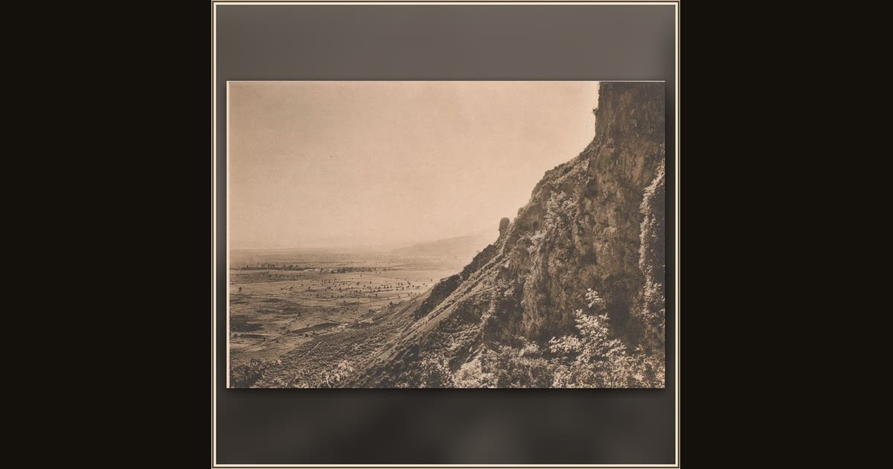

De vlakte van Thermopylae gezien vanaf het Oetamassief (Les Thermopyles et la Plaine de Lamia, vue prise des flancs de l'Oeta)
Frédéric Boissonnas (photographer); Meisenbach, Riffarth & Co. (clichémaker) · c. 1905 - in or before 1910 · rijksmuseum
A collotype shows the plain of Thermopylae from the flanks of Oeta, with steep rock beside the open land; Herodotus places Oeta west of the pass (7.176.3) Explore its place in Herodotus's Histories, Book VII, chapter 440.